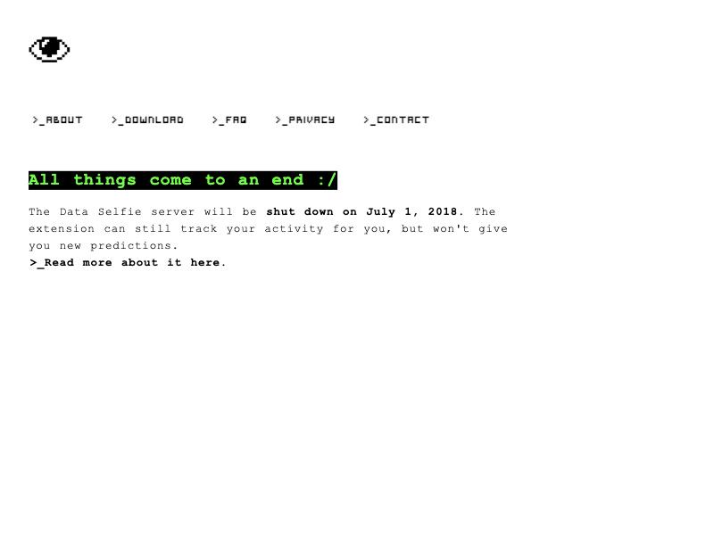

Data Selfie
www.dataselfie.it
Qué cuenta y cómo lo cuenta
Una extensión de navegador que registraba lo que mirabas en Facebook y te enseñaba qué deducían las máquinas sobre ti: personalidad, gustos, ideas. Lo cuenta como un informe de datos, bastante frío y técnico.
Qué me llevo y qué no
Me llevo la idea de enseñar lo que la máquina cree de ti y compararlo con quién eres. No me llevo la estética tan fría: yo quiero algo más cercano, con Algo.